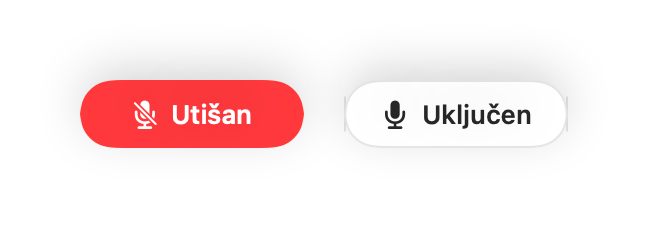
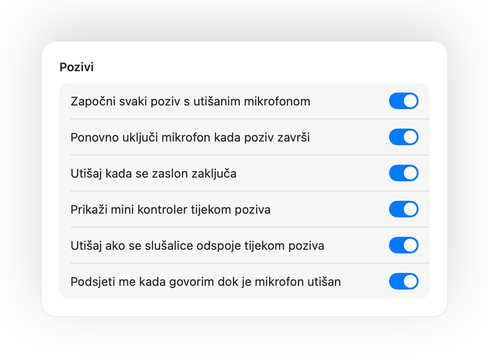
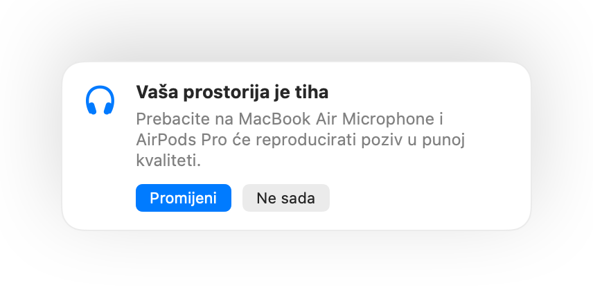
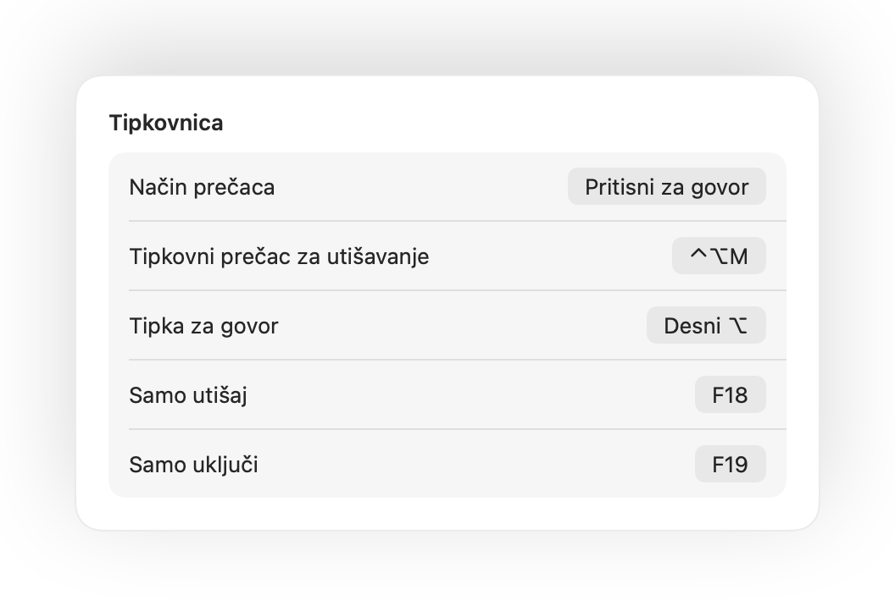

Pritisnite AirPods.
Tijekom bilo kojeg poziva pritisnite stapku. Muffle isključuje sam mikrofon, pa Meet, Zoom, Teams i svaka druga aplikacija ne čuju ništa.

Muffle za Mac
Pritisnite AirPods ili jedan tipkovni prečac. Muffle isključuje sam mikrofon, pa Google Meet, Zoom, Teams, Slack i svaka druga aplikacija čuju tišinu.
Besplatno 3 dana. Zatim jednokratno plaćanje, bez pretplate. Za macOS 14 Sonoma i noviji.

Muffle isključuje mikrofon na razini hardvera, pa nije važno koja ga aplikacija, preglednik ili kartica upotrebljava.
Tijekom bilo kojeg poziva pritisnite stapku. Muffle isključuje sam mikrofon, pa Meet, Zoom, Teams i svaka druga aplikacija ne čuju ništa.
Jedan tipkovni prečac za svaku aplikaciju, čak i kada je poziv u kartici u pozadini. Držite ga za govor ili prebacite na pritisni za govor.
Muffle prepoznaje vaš glas i podsjeća vas, prije nego što objasnite cijelu ideju nikome.

Mali plutajući gumb prikazuje stanje mikrofona i utišava jednim klikom. Zeleno je uključeno, crveno je utišano.

Počnite govoriti dok je mikrofon utišan i Muffle će vas upozoriti, prije nego što cijelu ideju ispričate u prazno.
Tijekom bilo kojeg poziva pritisnite stapku jednom da biste utišali mikrofon i ponovno da biste ga uključili. Radi čak i u Chromeu, gdje Google Meet i drugi web pozivi ignoriraju pritisak na AirPods.
Control-Option-M utišava vas posvuda, čak i kad je poziv u pozadinskoj kartici. Držite pritisnuto da biste govorili dok je mikrofon utišan, a otpustite da biste ga ponovno utišali.
Mali plutajući gumb prikazuje stanje mikrofona tijekom poziva. Kliknite ga da biste ga utišali ili uključili.
Započnite svaki poziv s utišanim mikrofonom, ponovno uključite mikrofon kada poziv završi i utišajte ga kad god zaključate Mac.

Uključili ste mikrofon samo da nešto kažete? Ako potom ostanete tihi onoliko dugo koliko odaberete, Muffle vas ponovno utišava. Računa se samo vaš glas, a ne tipkanje ili pozadinska buka.
Chrome, Zoom i Teams sami mijenjaju razinu mikrofona. Zaključajte je i Muffle će je vratiti na prethodnu vrijednost.
Uz AirPods u tihoj prostoriji Muffle predlaže mikrofon vašeg Maca kako bi AirPods reproducirale poziv u punoj kvaliteti. Kada postane bučno, predlaže mikrofon AirPods slušalica.

Odaberite kako vaš tipkovni prečac radi: dodirnite za prebacivanje, držite za govor ili držite da biste utišali mikrofon pri kašljanju. Dodajte zasebne tipke za utišavanje i uključivanje ili držite jednu tipku kao što je Desni ⌥ ili dodatna tipka miša.

Ako se slušalice odspoje usred poziva, Muffle utišava zvuk prije nego što se poziv prebaci na mikrofon Maca i prenese sve zvukove iz sobe.
Utišajte zvuk iz aplikacije Prečaci, putem Siri, uređaja Stream Deck, aplikacije Raycast ili gumbom u Kontrolnom centru.
Zeleni ili crveni sjaj oko zaslona, ikona trake s izbornicima u boji, plutajući gumb i zvuk koji možete isključiti za svaki mikrofon. Uključite one koji vam odgovaraju.
Muffle nikada ne snima, ne pohranjuje niti ne šalje zvuk. Samo uključuje i isključuje mikrofon te mjeri njegovu glasnoću. Nema korisničkih računa, analitike niti praćenja.
Instalirajte Muffle s Mac App Storea i dopustite pristup mikrofonu.
Pridružite se pozivu u bilo kojoj aplikaciji, kao i obično.
Pritisnite AirPods, pritisnite Control-Option-M ili kliknite ikonu u traci s izbornicima da biste utišali mikrofon.
Da. Chrome ne prosljeđuje pritisak na AirPods za utišavanje web pozivima, pa ga Muffle preuzima i sam utišava mikrofon. Isto vrijedi za svaki poziv u kartici preglednika.
Vaša aplikacija za pozive može i dalje prikazivati mikrofon kao uključen jer Muffle isključuje sam mikrofon, a ne gumb u aplikaciji. Drugi u svakom slučaju čuju tišinu. Ikona Muffle u traci s izbornicima postaje crvena dok je mikrofon utišan.
AirPods Pro, AirPods 3 i noviji modeli te AirPods Max, kao i modeli Beats s kontrolama poziva. Tipkovni prečac i traka s izbornicima rade sa svakim mikrofonom.
Da. Muffle radi sa svakom aplikacijom na Macu koja upotrebljava mikrofon, kako sa stolnim aplikacijama tako i s pozivima u pregledniku.
Ne. Isprobajte sve značajke besplatno 3 dana, a zatim otključajte Muffle jednokratnom kupnjom.
macOS prosljeđuje pritisak na AirPods samo aplikacijama koje upotrebljavaju mikrofon, pa Muffle tijekom poziva održava nečujnu vezu otvorenom. Ništa se ne snima.
Muffle ponovno uključuje mikrofon pri izlasku, pa nikada nećete ostati bez tona.
macOS 14 Sonoma i novije verzije. Za gumb u Kontrolnom centru potreban je macOS 26 ili noviji.
Da. Odaberite „Pritisni za govor” u postavkama i držite prečac za govor. Također možete držati jednu tipku kao što je Desni ⌥ ili fn, ili dodatnu tipku miša.
Kada poziv upotrebljava mikrofon AirPods slušalica, AirPods se prebacuju u način rada za poziv koji reproducira zvuk u nižoj kvaliteti. U tihoj prostoriji Muffle umjesto toga predlaže mikrofon vašeg Maca, pa AirPods nastavljaju reproducirati zvuk u punoj kvaliteti.
Neće. Muffle prepoznaje govor uz Appleovu analizu zvuka na uređaju, pa se računa samo govor. Tipkanje, klikovi i pozadinska buka se ne računaju, a ništa se ne snima.
Kratki i praktični odgovori za utišavanje mikrofona na Macu, u svakoj aplikaciji.
Muffle možete besplatno isprobavati 3 dana.